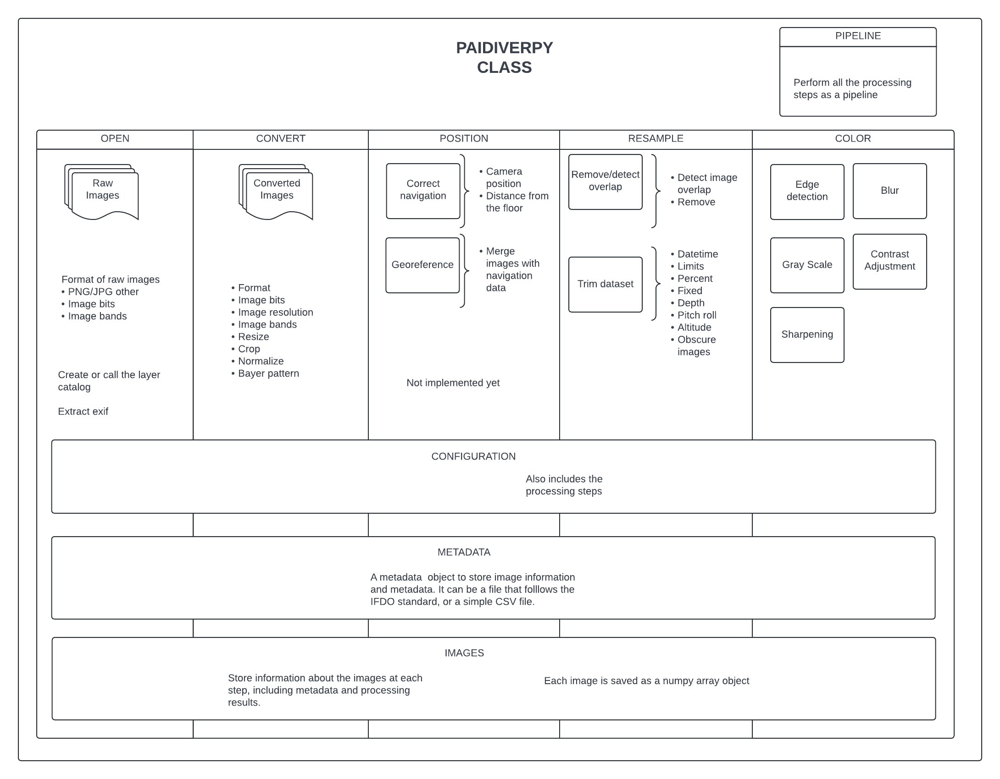

Package Organisation#
The Paidiverpy package is structured into multiple layers, each designed to facilitate specific aspects of image processing. This modular approach allows for flexibility, ease of use, and clarity in managing different functionalities.

Core Classes#
Paidiverpy: The main class that serves as the central container for all image processing functions. It orchestrates the execution of various processing tasks and provides a unified interface for users. This class is responsible for initializing and managing the entire pipeline, making it easier to perform complex operations with minimal setup.
OpenLayer: A subclass dedicated to handling the opening and initial loading of images. This layer is responsible for reading images from specified input paths and preparing them for subsequent processing steps. It supports various image formats, ensuring compatibility with the input data.
ConvertLayer: This layer focuses on image format conversion and bit-depth adjustments. Users can apply various conversion techniques, such as changing color spaces or altering image bit depth, to prepare images for specific analytical tasks.
PositionLayer: Handles spatial information and metadata associated with images. This layer allows users to apply transformations based on the geographic coordinates or other spatial parameters, making it suitable for tasks that require spatial awareness.
ResampleLayer: Responsible for resampling images to different resolutions or formats. This layer ensures that images can be resized or interpolated as needed, providing the necessary flexibility for different analysis scenarios.
ColorLayer: This layer applies color manipulation techniques to images, such as color correction, filtering, and enhancement. It offers a range of methods to adjust the visual properties of images, allowing users to improve their quality for better analysis.
Supporting Classes#
Configuration: A utility class that parses and manages configuration files. It ensures that the pipeline runs according to user specifications by loading and validating the settings defined in the configuration files. This class is essential for maintaining reproducibility in processing workflows.
Metadata: Manages metadata associated with images. This class is responsible for loading, validating, and processing metadata files, ensuring that the required contextual information is readily available for image processing tasks. It supports both IFDO and CSV formats, making it versatile for different use cases.
ImagesLayer: This class stores the outputs from each image processing step. It acts as a container for processed images, allowing users to access intermediate results easily. This organization helps in tracking changes made to images throughout the processing pipeline.
Pipeline Class#
The Pipeline class integrates all processing steps defined in the configuration file into a cohesive workflow. It orchestrates the execution of each layer in the correct sequence, ensuring that the input data flows smoothly through the processing stages. Users can customize the pipeline by modifying the configuration file, allowing for tailored processing that meets specific analytical needs.
This structured organization enhances the usability of the Paidiverpy package, making it easier for users to implement complex image processing tasks efficiently.